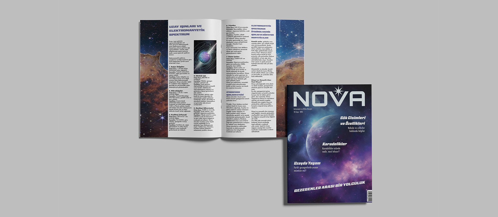
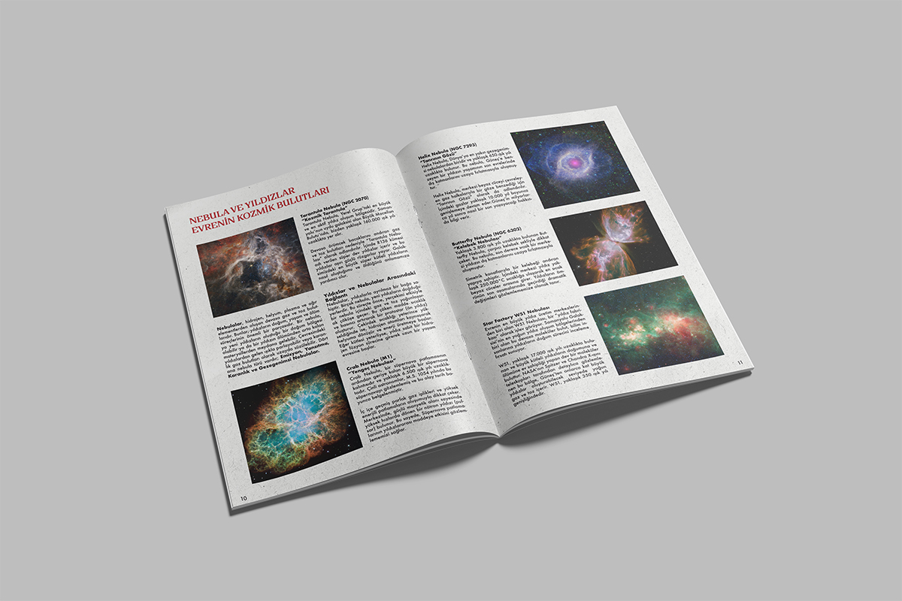
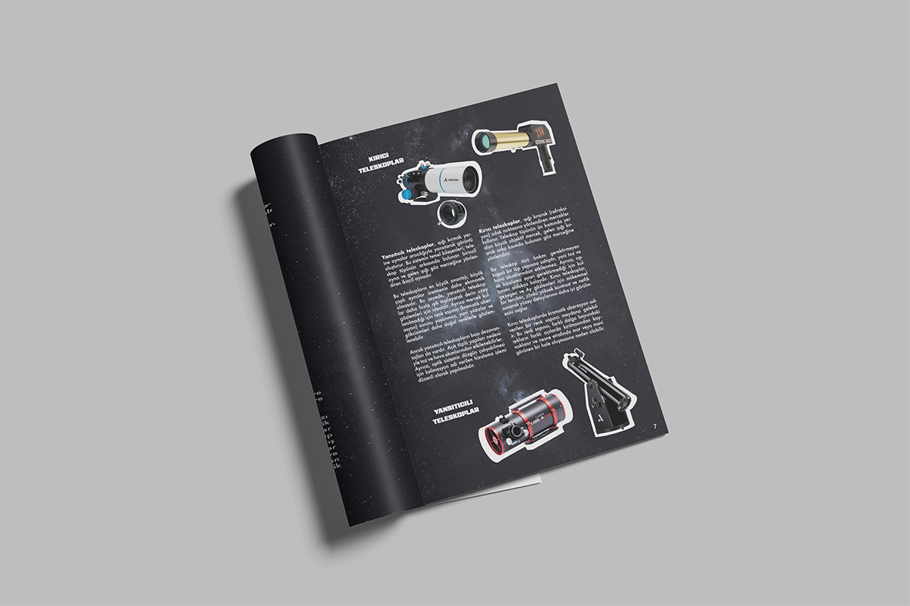

01
Nova
Nova
Magazine
Magazine Design
Nova is an astronomy and space magazine designed to inform readers while highlighting the wonder of the universe through immersive imagery, expressive typography and a clear editorial structure.
- Category
- Editorial Design
- Applications
- Cover, spreads and editorial layout


